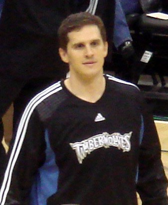

The Cal Basketball Schedule for 2026-27, and Everything Announced So Far
The non conference slate is out, the ACC opponents are set, and the dates for conference play are still coming. Here is the whole picture, kept current.

Cal opens the 2026-27 basketball season at home against Radford on 4 November, hosts USC on 11 November and Vanderbilt on 6 December, and plays eighteen ACC games with Stanford home and away. The non conference schedule was released on 16 August. The ACC opponents and sites were announced back in May, but the conference dates have not been published yet, so the second half of this page is a list of opponents rather than a calendar. It gets filled in here as soon as the league puts the dates out.
Non conference schedule
| Date | Opponent | Site |
|---|---|---|
| Wed 4 Nov | Radford | Haas Pavilion |
| Wed 11 Nov | USC | Haas Pavilion |
| Sat 14 Nov | Utah Tech | Haas Pavilion |
| Thu 19 Nov | East Texas A&M | Haas Pavilion |
| Mon 23 Nov | Alabama State | Haas Pavilion |
| Sat 28 Nov | Minnesota | Sanford Pentagon, Sioux Falls |
| Wed 2 Dec | at Utah | Salt Lake City |
| Sun 6 Dec | Vanderbilt | Haas Pavilion |
| Thu 10 Dec | Southeastern Louisiana | Haas Pavilion |
| Sat 12 Dec | UC Riverside | Haas Pavilion |
| Sun 20 Dec | Southern | Haas Pavilion |
| Tue 22 Dec | Northeastern | Haas Pavilion |
| Eleven home games | One road game, one neutral | More dates to be added |
Eleven of the thirteen non conference games are at Haas, one is at Utah and one is in South Dakota. That is a schedule built to bank wins before Christmas, and there is nothing wrong with that as long as the two real tests get taken seriously. USC on 11 November and Vanderbilt on 6 December are the games that will tell you something. Both are expected to be near the top of their conferences and both are at home, which is exactly the kind of game Cal needs to start winning if the NCAA tournament is ever going to be a real conversation in Berkeley again.

ACC opponents
The ACC plays an eighteen game conference schedule made up of two home and away series, seven home only opponents and seven road only opponents, with one league team missed entirely each year. Cal draws Stanford and NC State twice, which means the Bay Area rivalry is on the calendar home and away again, and the team they do not play in 2026-27 is Georgia Tech.
| Format | Opponents |
|---|---|
| Home and away | Stanford, NC State |
| At Haas Pavilion | Boston College, Florida State, Miami, Syracuse, Virginia, Virginia Tech, Wake Forest |
| On the road | Clemson, Duke, Louisville, North Carolina, Notre Dame, Pittsburgh, SMU |
| Not played | Georgia Tech |
| Eighteen games | Nine at home, nine away |
That road list is brutal. Duke, North Carolina, Louisville and Clemson away from home in one season is about as difficult a set of trips as this conference can hand out, and it is going to be worth remembering in March when somebody looks at the record without looking at where the games were played. The flip side is that Florida State, Miami, Virginia and Syracuse all have to come to Berkeley, and Haas at full volume on a Saturday is still a genuinely hard place to play.
Where the program actually is
Cal went 22-12 last season and 9-9 in the ACC in Mark Madsen's third year, tied for ninth in the league, and reached the second round of the NIT before Saint Joseph's won at Haas by a point. That was the best Cal team in a decade. It also started 12-1, the program's best start since 1959-60, then went .500 in conference play, which is the part that stings. There were real wins in there: North Carolina at home, UCLA on a neutral floor, both games against Stanford, a one point win at Miami.

Why the schedule matters more than usual this year
Because the roster turned over again. Cal has spent the last three offseasons rebuilding through the portal, and 2026-27 is no different: Jordan Ross arrives at guard by way of Georgia and Saint Mary's, Michael Cooper comes in from Wright State after leading his team in scoring, Nojus Indrusaitis arrives from Pitt, Jake Wilkins and Amier Ali add size on the wing, and Lee Dort is back in the middle. Madsen said in the summer that he had not settled on a starting five or a rotation, which is a normal thing for a coach to say in July and an entirely honest thing to say about this particular roster.
A team that is still figuring out who it is benefits enormously from eleven home games before conference play. It also means the November results will look better than the team actually is, and everybody in Berkeley should keep that in mind before the December schedule turns serious.
When the ACC dates come out
The conference typically releases its full basketball calendar with dates and television windows in the late summer or early autumn, after the opponents and sites have already been published in the spring. The opponents above are confirmed. The dates are not. When they land, the table gets rebuilt as a proper calendar, and the two Stanford games will be the first ones anybody looks for. The history of that rivalry, on the football side at least, is in the Big Game history.
Last season, game by game
Keeping this here because a lot of people searching for the Cal basketball schedule are actually looking for what happened in 2026, not what is coming.
| Date | Opponent | Result |
|---|---|---|
| 3 Nov | CSU Bakersfield | Won 87-60 |
| 6 Nov | Wright State | Won 77-67 |
| 10 Nov | Cal State Fullerton | Won 93-65 |
| 13 Nov | at Kansas State | Lost 96-99 |
| 18 Nov | Presbyterian | Won 67-57 |
| 21 Nov | Sacramento State | Won 91-67 |
| 25 Nov | UCLA, neutral | Won 80-72 |
| 2 Dec | Utah | Won 79-72 |
| 6 Dec | Pacific | Won 67-61 |
| 9 Dec | Dominican | Won 93-71 |
| 13 Dec | Northwestern State | Won 79-70 |
| 19 Dec | Morgan State | Won 97-50 |
| 21 Dec | Columbia | Won 74-56 |
| 30 Dec | Louisville | Lost 70-90 |
| 2 Jan | Notre Dame | Won 72-71 |
| 7 Jan | at Virginia | Lost 60-84 |
| 10 Jan | at Virginia Tech | Lost 75-78 |
| 14 Jan | Duke | Lost 56-71 |
| 17 Jan | North Carolina | Won 84-78 |
| 24 Jan | at Stanford | Won 78-66 |
| 28 Jan | at Florida State | Lost 61-63 |
| 31 Jan | at Miami | Won 86-85 |
| 4 Feb | Georgia Tech | Won 90-85 |
| 7 Feb | Clemson | Lost 55-77 |
| 11 Feb | at Syracuse | Lost 100-107 in double overtime |
| 14 Feb | at Boston College | Won 86-75 |
| 21 Feb | Stanford | Won 72-66 |
| 25 Feb | SMU | Won 73-69 |
| 28 Feb | Pittsburgh | Lost 56-72 |
| 4 Mar | at Georgia Tech | Won 76-65 |
| 7 Mar | at Wake Forest | Lost 73-80 |
| 11 Mar | Florida State, ACC tournament | Lost 89-95 |
| 18 Mar | UIC, NIT first round | Won 91-73 |
| 22 Mar | Saint Joseph's, NIT second round | Lost 75-76 |
| Final record | 22-12 overall, 9-9 ACC | NIT second round |
How this page works
This is a live page, not a one time post. The ACC dates go in as soon as the conference releases them, tip times and television go in as they are set, and results go in through the winter. Football has its own schedule page at the 2026 Cal football schedule, the reason a Berkeley team plays in Chapel Hill in the first place is covered in our realignment explainer, and everything else Cal is on the Cal hub.
More coverage: Cal section · Bay Area Sports · Bay Area Sports Blog home